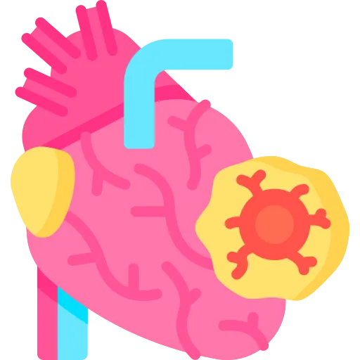

One continuum with five points on it, three tests that tell the points apart, and the chest pain question that is really asking whether you noticed the pattern changed.
Coronary artery disease is one process with five names. The names are points on a line, and the questions live at the boundaries between them.
Points get lost here in three predictable ways. Read these before you read anything else.
Then the scenario gives you a woman with fatigue and nausea, and you call it indigestion. Chest pain is the classic presentation, not the only one. Women, older adults and people with diabetes often present with fatigue, dyspnea, or jaw pain and nothing else.
Stable angina, unstable angina, NSTEMI and STEMI are not four illnesses. They are four positions on one continuum. Two tests move a patient between them: the troponin and the 12-lead. Learn what each test rules in, and the whole spectrum sorts itself.
A patient with three years of predictable exertional angina now gets it sitting still. Nothing about the pain itself changed. The pattern changed, and that is the finding. Pattern change is the earliest sign a plaque has become unstable.
For every point on the continuum below, you should be able to say four things with the book closed: the one-sentence definition, the clue you would actually see in a patient, the priority nursing action, and the first-line drug with its teaching point.
If you cannot say all four out loud, you do not know it yet. Familiarity is not recall.
| Point on the line | Definition in one sentence | Clue in the scenario | Priority action | First-line drug |
|---|---|---|---|---|
| Stable angina | A fixed plaque limits flow, so demand outruns supply during exertion. | Same trigger every time, gone in 3 to 5 minutes with rest. | Stop the activity, then give nitroglycerin. | Sublingual nitroglycerin. One tablet, wait 5 minutes. |
| Unstable angina | A plaque has ruptured and partly occluded the vessel; no cells have died yet. | New pain, rest pain, or a pattern that got worse. Over 20 minutes. Nitroglycerin does not fix it. | Treat as ACS. Admit, monitor, get a 12-lead and troponins. | Aspirin 325 mg chewed, then anticoagulation. |
| NSTEMI | Partial occlusion has killed subendocardial muscle. | Same picture as unstable angina, but the troponin is positive. | Continuous monitoring, serial troponins, cath within 24 to 72 hours. | Aspirin plus a P2Y12 inhibitor. Watch for bleeding. |
| STEMI | Complete occlusion has killed muscle through the full wall thickness. | ST elevation in contiguous leads, positive troponin. | Activate the cath lab. Door to balloon under 90 minutes. | Aspirin, then emergent reperfusion. Time is muscle. |
Write these four rows on one index card, by hand. Predictable equals stable. Unpredictable equals unstable. Troponin positive equals infarct. ST elevated equals the artery is shut. That card is most of the exam.
You do not need the whole coronary tree. You need four vessels and the region each one feeds. That is what lets you predict the complication before it happens.
| Artery | Area supplied | What it means clinically |
|---|---|---|
| Left main coronary | Branches into the LAD and the circumflex | The widow maker. Occlusion here is often fatal. |
| Left anterior descending (LAD) | Anterior left ventricular wall, septum, bundle branches | Most commonly affected. Anterior MI, the largest area of muscle lost. |
| Left circumflex (LCx) | Lateral and posterior left ventricular walls | Lateral or posterior MI. |
| Right coronary artery (RCA) | Right ventricle, inferior left ventricle, SA and AV nodes | Inferior MI. Expect bradycardia and heart blocks, because the nodes lose their supply. |
Every other organ perfuses during systole. The heart does not. During systole the contracting muscle squeezes its own vessels shut, so the coronaries fill during diastole.
Speed up the heart and you shorten diastole. Shorter diastole means less coronary filling time. That is why tachycardia is dangerous here. It is also why beta-blockers are cornerstone therapy, not just blood pressure drugs.
When an artery narrows slowly, the heart grows small connecting branches around the blockage. Those are collaterals, and they carry real flow.
This is why severity of disease and severity of symptoms do not track together. A patient with chronic stable CAD may have well developed collaterals and few complaints. A patient whose plaque ruptured this morning has none, because there was no time to build them.
Atherosclerosis is the process underneath every diagnosis in this guide. It takes decades and runs in four stages.
Not size. Stability.
A large plaque with a thick fibrous cap narrows the vessel. It causes predictable exertional angina. It rarely ruptures. A smaller plaque with a thin inflamed cap barely narrows anything. It can tear open this afternoon.
So some patients infarct with mild disease on angiography. Others sit at 80 percent stenosis for years. It is also why statins matter beyond the LDL number: they thicken and stabilise the cap.
Every symptom and every drug in CAD comes back to one equation. Demand outran supply.
| What raises supply | What raises demand |
|---|---|
| Coronary blood flow, meaning vessel patency | Heart rate |
| Arterial oxygen content | Contractility |
| Hemoglobin level | Wall tension, meaning preload and afterload |
| Diastolic perfusion time | Blood pressure, meaning afterload |
Treatment attacks both columns. Nitrates dilate and raise supply. Beta-blockers slow the rate and cut demand. Rest cuts demand for free, which is why it is often the correct first action.
Risk factor questions come in two shapes. Which one can this patient actually change, and what is the number you are aiming at.
These set the baseline. They do not appear in the answer to a teaching question.
These are where the teaching answers live. Together they account for most of the risk.
Say what the goal is, not just that a goal exists. These are the numbers questions are built from.
| Risk factor | Target | How it is reached |
|---|---|---|
| LDL cholesterol | Under 70 mg/dL in high-risk CAD; under 55 mg/dL after recurrent events | High-intensity statin, meaning atorvastatin 40 to 80 mg or rosuvastatin 20 to 40 mg. Add ezetimibe or a PCSK9 inhibitor if still above goal. |
| Blood pressure | Under 130/80 mmHg | ACE inhibitor or ARB first. Add a thiazide or calcium channel blocker. DASH diet, sodium under 2 g per day. |
| HbA1c in diabetes | Under 7 percent for most; individualised in older adults | Metformin first line. SGLT2 inhibitors and GLP-1 agonists carry cardiovascular benefit. |
| BMI | 18.5 to 24.9 kg/m²; waist under 40 inches in men, under 35 in women | Diet, structured exercise, behavioural counselling. Bariatric surgery at BMI 40 and above, or 35 with comorbidities. |
| Physical activity | 150 minutes per week moderate, or 75 minutes vigorous | Cardiac rehab, then an independent program. Resistance training twice a week. |
| Smoking | Complete cessation, including e-cigarettes and secondhand smoke | Counselling plus pharmacotherapy: varenicline is the most effective, then bupropion, then nicotine replacement. |
| Diet | Mediterranean or DASH pattern | More fruit, vegetables, whole grains and fatty fish twice weekly. Less sodium, added sugar and processed meat. |
Quitting smoking cuts cardiovascular risk in half within one year. Nothing else on the list moves risk that far that fast.
The timeline is worth knowing too. Blood pressure and heart rate start to normalise within 24 hours. Circulation and lung function improve over 2 to 3 months. At 15 years the risk approaches that of someone who never smoked.
Blank paper. Two columns, modifiable and not. Fill both from memory, then write the target number beside every modifiable one. The targets are what the questions ask for.
Discrimination axis: is the pattern predictable, and does rest with nitroglycerin end it.
Angina is chest discomfort caused by myocardial ischemia. This is the most tested pair in the topic. One goes home. One gets admitted.
Disposition: outpatient. Nitrates as needed, beta-blocker, aspirin, statin, and an elective workup.
Disposition: admit. This is acute coronary syndrome. Continuous monitoring, anticoagulation, urgent cardiology.
Unstable means the plaque is unstable, not the patient's mood or vital signs. A ruptured plaque with a partial clot on it can occlude completely at any moment.
Treat unstable angina as acute coronary syndrome from the first minute. Unstable angina plus a positive troponin is an NSTEMI, and the patient has already lost muscle.
Five points, one process. Two tests move a patient between them.
Troponin separates unstable angina from NSTEMI. The EKGs can look identical. A positive troponin proves cells died.
The 12-lead separates NSTEMI from STEMI. ST elevation means the vessel is completely shut and the patient needs reperfusion now.
Said as one line: unstable angina is troponin negative, NSTEMI is troponin positive without ST elevation, STEMI is troponin positive with it.
| Feature | Classic angina |
|---|---|
| Location | Substernal or left chest |
| Quality | Pressure, squeezing, tightness, heaviness |
| Radiation | Left arm, jaw, neck, shoulder, back, epigastrium |
| Company it keeps | Dyspnea, diaphoresis, nausea, anxiety |
| Levine's sign | The patient puts a clenched fist over the sternum while describing it |
Women, older adults and people with diabetes often present without chest pain at all. Instead you get:
Diabetic neuropathy blunts the pain signal. So the silent MI happens in exactly the patient least able to describe one.
Discrimination axis: spasm, not a fixed plaque.
Prinzmetal, also called variant angina, is caused by coronary artery spasm. The vessel may be nearly clean.
Beta-blockers are avoided here. Blocking beta receptors leaves alpha-mediated vasoconstriction unopposed, which can worsen the spasm. That is the exception to the beta-blocker rule in this guide, and exceptions get tested.
Resting tests tell you what the heart looks like now. Stress tests provoke ischemia so it can be caught. The question is usually which stress test, and why that one.
| Test | What it shows | What you do about it |
|---|---|---|
| 12-lead EKG | Arrhythmia, ischemia, old infarct shown by Q waves | Compare to baseline. A normal resting EKG does not rule out CAD. |
| Chest x-ray | Heart size, pulmonary congestion, calcification | Cannot diagnose CAD. It rules out other causes of the pain. |
| Echocardiogram | Wall motion, ejection fraction, valve function | A resting echo can miss ischemia. Stress echo is more sensitive. |
| Lipid panel | LDL, HDL, triglycerides, total cholesterol | Fasting is preferred, because triglycerides are the value food distorts. |
| Basic or comprehensive metabolic panel | Renal function, electrolytes, glucose | Creatinine decides whether contrast is safe. |
Discrimination axis: can the patient exercise, and if not, do they have bronchospastic disease.
| Feature | Exercise | Adenosine or regadenoson | Dobutamine |
|---|---|---|---|
| How it works | The patient walks, so heart rate and oxygen demand climb | A vasodilator. Healthy arteries dilate more than diseased ones, creating a perfusion mismatch | A beta-1 agonist. It raises rate and contractility with a drug instead of a treadmill |
| Who gets it | Anyone who can exercise and has a readable baseline EKG | Anyone who cannot exercise | Anyone who cannot exercise and cannot have adenosine |
| What rules it out | Cannot walk, unstable angina, decompensated heart failure, severe aortic stenosis | Asthma, COPD, any bronchospastic disease. Also second or third degree AV block | Severe hypertension, significant arrhythmia, hypertrophic cardiomyopathy, aortic aneurysm |
| Caffeine | No restriction | Hold 24 to 48 hours. Caffeine blocks adenosine receptors and the test simply will not work | No restriction, because the mechanism is different |
| How it is stopped | Stop walking | Aminophylline. Keep it drawn up at the bedside | A short-acting beta-blocker, usually esmolol |
| Prep | NPO 4 hours, comfortable shoes, hold beta-blockers if ordered, IV access | NPO 4 hours, verify no caffeine, hold dipyridamole, IV access | NPO 4 hours, hold beta-blockers, IV access, continuous monitoring |
Adenosine in a patient with asthma can cause life-threatening bronchospasm. If the chart says asthma or COPD, the answer is dobutamine.
This is the highest-yield contraindication here. It is also one line on a history that is easy to skim past.
Know the stop criteria before you start the test, not during it.
A falling blood pressure during exertion is the one people miss. Pressure should rise as demand rises. If it drops, the ventricle is failing under load.
A non-invasive CT of the coronaries with IV contrast. Its strength is ruling disease out.
Cardiac catheterization with angiography is the definitive test. It shows the coronaries directly, and intervention can happen in the same trip.
It is ordered for acute coronary syndrome. Also for a positive or high-risk stress test. Also for angina that medication will not settle. Heart failure with suspected CAD, selected preoperative evaluations, and survivors of sudden cardiac arrest round out the list.
Discrimination axis: how deep the artery is decides the bed rest and the bleed you fear.
Now the default approach in most labs.
Still used for complex work and large-bore devices.
Retroperitoneal hemorrhage is dangerous because there is nothing to see. Blood tracks behind the peritoneum, so the groin looks fine while the patient empties out.
Three findings together: new progressive back or flank pain, unexplained hypotension, and tachycardia. The lab confirmation is a falling hemoglobin and hematocrit with no bleeding source anywhere.
Treat it as a code-level emergency. Large-bore access, fluids, type and crossmatch. Urgent CT of the abdomen and pelvis. Prepare for surgical or interventional repair.
Medical therapy has four jobs: relieve symptoms, slow the disease, prevent events, and extend life. The organising frame is ABCDE.
| Class | Examples | What it does | What you monitor or hold for |
|---|---|---|---|
| Antiplatelets | Aspirin, clopidogrel, ticagrelor | Stops platelets clumping on a damaged plaque | Bleeding. Aspirin 81 mg daily is the standard maintenance dose. |
| Beta-blockers | Metoprolol, carvedilol, bisoprolol | Lowers rate, pressure and oxygen demand | Heart rate and blood pressure. Hold if the rate is under 60. Never stop abruptly. |
| Statins | Atorvastatin, rosuvastatin | Lowers LDL and stabilises the plaque cap | Liver function. Report muscle pain, which can mean rhabdomyolysis. |
| ACE inhibitors | Lisinopril, ramipril, enalapril | Reduces afterload and prevents remodelling | Potassium and creatinine. Watch for dry cough and angioedema. |
| Nitrates | Nitroglycerin, isosorbide | Dilates coronaries and drops preload | Blood pressure. Headache is expected. Never give with a PDE5 inhibitor such as sildenafil. |
| Calcium channel blockers | Amlodipine, diltiazem | Lowers pressure and prevents spasm | Heart rate with diltiazem or verapamil. Ankle edema is common with amlodipine. |
Sit or lie down first, because nitroglycerin drops blood pressure and people faint standing.
One tablet under the tongue. Wait 5 minutes. If pain remains, a second tablet, wait 5 minutes. If pain remains, a third. If pain is still there at 15 minutes, call 911.
Store the tablets in the original dark glass bottle, since light degrades them. Replace every 6 months. A fresh tablet gives a slight fizzing or burning under the tongue.
The rule is not "take three then decide". If pain is not improving, emergency services get called.
Cardiac rehab reduces all-cause mortality by 20 to 30 percent. Roughly 20 percent of eligible patients attend.
The barriers are referral, transport, cost, time, and patients who feel fine. Automatic referral at discharge, rather than waiting to be asked, raises enrollment substantially.
Discrimination axis: how many vessels, and is the left main involved.
When drugs are not enough, the blockage gets opened or bypassed. Two approaches, and the choice is not about how sick the patient feels.
Best for: one or two vessel disease, acute STEMI, and patients too high risk for surgery.
Best for: left main disease at 50 percent stenosis or more, three vessel disease especially with diabetes, and reduced ejection fraction.
A fresh stent is bare metal sitting in an artery. Until endothelium grows over it, which takes 6 to 12 months, it is intensely thrombogenic.
Stop the P2Y12 inhibitor early and the stent clots. Acute stent thrombosis carries 20 to 40 percent mortality.
Teach it as an absolute. Never stop these without calling cardiology first. That includes dental work and minor surgery.
| System | What you are watching |
|---|---|
| Cardiac | Telemetry. Atrial fibrillation is common. Watch for tamponade. |
| Respiratory | Ventilator weaning, incentive spirometry, preventing atelectasis and pneumonia. |
| Neurologic | Stroke from pump emboli. Delirium is common in older patients. |
| Renal | Intake and output, creatinine. Contrast and the pump both threaten the kidneys. |
| Wounds | Sternal incision and the leg harvest site. Watch for infection and dehiscence. |
| Pain | Control it, because a patient who will not cough or walk gets pneumonia. |
The sternum is wired back together and takes 6 to 8 weeks to knit. Teach all of this before discharge.
These should be automatic. If you have to reason toward one of them, it is not learned yet.
| Number | Meaning |
|---|---|
| Under 70 mg/dL | LDL goal in high-risk CAD; under 55 after recurrent events |
| Under 130/80 mmHg | Blood pressure target |
| Under 7 percent | HbA1c target in diabetes |
| 150 minutes per week | Moderate exercise target, or 75 minutes vigorous |
| 81 mg | Daily maintenance aspirin dose |
| 3 to 5 minutes | How long stable angina lasts |
| Over 20 minutes | Duration that points to unstable angina |
| 1 tablet, 5 minutes, 3 doses | Sublingual nitroglycerin. Call 911 at 15 minutes. |
| 24 to 48 hours | Caffeine hold before an adenosine stress test |
| Over 10 mmHg | Systolic drop that stops a stress test |
| 48 hours | Metformin hold after contrast |
| 6 to 8 hours | NPO before cardiac catheterization |
| 2 to 6 hours | Bed rest after femoral access, head of bed 30 degrees or less |
| 2 to 4 hours | TR band time after radial access |
| Every 15 minutes times 4 | Post-cath site checks, then hourly |
| Under 60 bpm | Heart rate at which you hold the beta-blocker |
| Under 90 minutes | Door to balloon time in STEMI |
| 6 to 12 months | Minimum dual antiplatelet therapy after a stent |
| 20 to 40 percent | Mortality of acute stent thrombosis |
| 20 to 30 percent | Mortality reduction from cardiac rehab |
| 50 percent | Risk reduction one year after quitting smoking |
| 50 percent or more | Left main stenosis that sends a patient to CABG |
| 6 to 8 weeks | Sternal healing after CABG; no lifting over 5 to 10 pounds |
Write these on the back of the index card from section 02. Test yourself on the meaning, not the number; the exam gives you the number and asks what it means.
Reading this again will not move your score. Producing it will. Everything below is done with the page shut.
Pick any point on the continuum. Without looking, say the one-sentence definition, the clue you would see in a patient, the priority action, and the first-line drug with its teaching point.
If you can do that for all four, you are ready. If you cannot, you know exactly which section to reopen.
8 questions with full rationales covering angina types, diagnostic testing, cardiac catheterization, and risk factor modification. Choose Practice Mode for instant feedback or Exam Mode to simulate test conditions.
One continuum: stable CAD, stable angina, unstable angina, NSTEMI, STEMI
Troponin separates unstable angina from NSTEMI
ST elevation separates NSTEMI from STEMI
Pattern change is the earliest sign a plaque has destabilised
Plaque stability decides events; plaque size decides symptoms
Caffeine cancels adenosine tests; aminophylline reverses them
Asthma or COPD rules out adenosine; use dobutamine instead
Back pain plus hypotension after femoral cath is a retroperitoneal bleed
DAPT for 6 to 12 months after a stent, and never stopped alone
Cardiac rehab cuts mortality 20 to 30 percent; only 20 percent attend